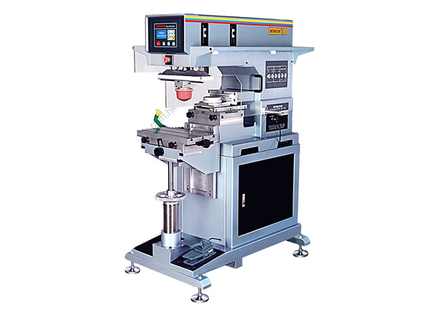
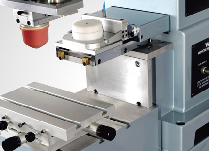
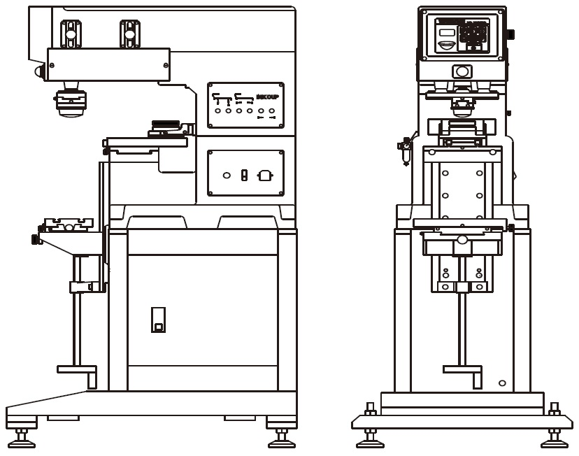

PAD PRINTING MACHINE
Winon WN-161E
Automatic Single Color Ink Cup Pad Printing Machine
Winon Industrial Co., Ltd. — Hong Kong
The Winon WN-161E is an automatic single-color ink cup pad printing machine designed for large-format precision printing, reliable operation, and consistent industrial production performance.
Its enclosed ink cup system, pneumatic operation, and large printing capacity make it suitable for printing logos, graphics, symbols, and product markings on plastic, metal, glass, ceramic, automotive parts, appliance components, and other industrial products.
Specifications
| Model | WN-161E |
|---|---|
| Printing Color | 1 Color |
| Ink Cup Diameter | Ø160 mm |
| Steel Plate Size | 150 × 300 mm |
| Maximum Printing Area | Ø120 mm |
| Maximum Workpiece Height | 300 mm |
| Printing Speed | Up to 1,200 pcs/hour |
| Control System | Touch Screen |
| Power Supply | AC 110V / 220V, 50/60Hz |
| Air Pressure | 6 Bar |
Contact us for the complete technical specification, available configurations, and production requirements.

BUILT FOR PRODUCTION
Technical Features
Large-Format Printing
Supports larger printing areas for clear and accurate logos, graphics, symbols, and markings.
Sealed Ink Cup System
Helps maintain consistent ink application while reducing ink evaporation and solvent consumption.
Touch Screen Control
Provides convenient machine operation and allows efficient adjustment of printing parameters.
Reliable Production
Designed for stable, repeatable performance during continuous industrial printing operations.
Printable Products
The Winon WN-161E is designed for high-quality large-format printing of logos, graphics, symbols, and product markings on a wide range of industrial and commercial products.
Large Plastic Components
Housings, covers, containers, appliance parts, and molded industrial plastic components.
Electronic Products
Control panels, electronic housings, equipment components, and industrial electronics.
Packaging Products
Bottles, containers, caps, and other packaging components requiring clear product markings.
Promotional Products
Promotional items, customized products, and larger advertising components.
Automotive Components
Automotive panels, interior components, controls, knobs, and other vehicle parts.
Industrial Components
Metal, ceramic, glass, and other industrial components requiring durable identification markings.
Technical Drawing
Detailed machine dimensions and layout reference to support installation planning, workspace preparation, and production setup.

Machine Dimensions
Reference drawing for machine size, working area, and installation space.
Production Layout
Helps customers plan machine placement within their production environment.
Installation Reference
Provides basic reference for setup and machine preparation.
Interested in the Winon WN-161E?
Contact Printway Marketing & Services for pricing, machine demonstrations, spare parts, consumables, and technical support.
Request a Quote